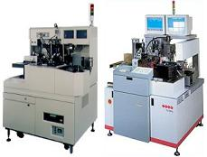
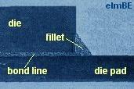
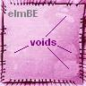

|
Die Attach Process
Die Attach
(also known as Die Mount or Die Bond) is the process of
attaching the
silicon chip to the
die pad or die cavity of the support structure (e.g., the
leadframe)
of the semiconductor package. There are two common die attach processes, i.e.,
adhesive die attach
and eutectic
die attach.
Both of these processes use
special die attach equipment and
die attach tools
to mount the die.
Adhesive Die Attach
Adhesive die attach uses
adhesives such as
polyimide, epoxy and silver-filled glass as die attach material to mount the die on the die pad
or cavity. The adhesive is first dispensed
in controlled amounts on the die pad or cavity. The die for mounting is
then ejected from the wafer by one or more ejector needles.
|
 |
|
Fig. 1.
Two
examples of die attach machines |
While being ejected, a pick-and-place tool commonly known as a 'collet'
then retrieves the die from the wafer tape and positions it on the
adhesive. All of the above steps are done by special die attach
equipment or 'die bonders' (see Fig. 1).
The mass of
epoxy climbing the edges of the die is known as the
die attach
fillet.
Excessive die attach fillet may lead to die attach
contamination
of the
die surface. Too little of it may lead to
die lifting
or die
cracking.
Another
critical aspect of adhesive die attach is the
ejection
of the die from the wafer tape during the pick-and-place system's
retrieval operation. The use of
inappropriate
or
worn-out
ejector needle and
improper
ejection parameter settings can cause die backside
tool marks
or
microcracks
that can eventually lead to
die cracking.
|
 |
|
Fig. 2.
Photo
showing the D/A adhesive as the grainy material between the die and the
die pad |
See also:
Die Attach Failures
Eutectic Die Attach
Eutectic die
attach, which is commonly employed in hermetic packages, uses a
eutectic
alloy
to attach the die to the cavity. A eutectic alloy is an alloy with the
lowest
melting point possible for the metals
combined in the alloy. The Au-Si eutectic alloy is the most commonly used
die attach alloy in semiconductor packaging.
A gold
preform is placed on
top of the cavity while the package is being heated. When the die is
mounted over this gold preform, Si from the die backside
diffuses into
the gold preform, forming Au-Si alloy. As more Si diffuses into
the gold preform, the Si-to-Au ratio of the alloy increases, until such
time that the eutectic ratio is achieved. The Au-Si eutectic alloy has
2.85% of Si and melts at
about
363 degrees C.
Thus, the die attach temperature must be reasonably higher than this
temperature to achieve the eutectic melting point. At this point, the
alloy melts, attaching the die to the cavity.
To optimize
the die attachment, the operator
'scrubs'
the die into the eutectic alloy for
even distribution of the die attach alloy. Eventually the diffusion of
silicon atoms into the gold preform exceeds the eutectic limit, and the
die attach alloy begins to solidify once again. The package is then allowed
to cool down to completely solidify the eutectic alloy and complete the die attach
process.
Aside from
the Au-Si alloy, semiconductor assembly may employ other metal alloys
for eutectic die attach. Table 1 lists some of the other
alloys used in eutectic die attach preforms.
Table 1.
Compositions and Melting Points of some Eutectic Die Attach Preforms
|
Composition |
Temperature (deg C) |
|
Liquidus |
Solidus |
|
80% Au,
20% Sn |
280 |
280 |
|
92.5% Pb,
2.5% Ag, 5% In |
300 |
- |
|
97.5% Pb,
1.5% Ag, 1% Sn |
309 |
309 |
|
95% Pb,
5% Sn |
314 |
310 |
|
88% Au,
12% Ge |
356 |
356 |
|
98% Au,
2% Si |
800 |
370 |
|
100% Au |
1063 |
1063 |
Effects of Die Attach Voids
Regardless of
die attach process, the presence of voids in the die attach material
affects the quality and reliability of the device itself. Large die
attach voids result in low shear strength and low thermal/electrical
conductivity, and produce large
die stresses
that may lead
to
die cracking.
Small voids provide sufficient shear strength and electrical/thermal
conductivity, while 'cushioning' large dice from stresses. Total
absence of voids may mean high strength, but it may also induce large
dice to crack. The strength of die attachment is measured using the
die shear test.
|

Figure 3.
X-ray photo of large epoxy die attach voids; Au-Si eutectic voids are
more visible during x-ray inspection
because of the higher density of Au-Si
|
Front-End Assembly
Links:
Wafer Backgrind;
Die Preparation;
Die Attach;
Wirebonding;
Die Overcoat
Back-End Assembly
Links:
Molding;
Sealing;
Marking;
DTFS;
Leadfinish
See Also:
Die Shear Testing; Die
Attach Tools; Die
Attach Materials;
Die Attach Failure Mechanisms;
IC
Manufacturing; Assembly Equipment
HOME
Copyright
©
2001-2006
www.EESemi.com.
All Rights Reserved.
|